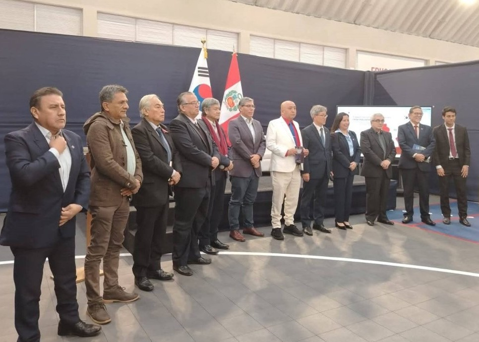

Technology & academic cooperation
Supported interpretation and facilitation at UNI’s ITS & Smart City Institute, helping connect Peru and Korea through academic exchanges, business cooperation, and conferences.
Credibility · Academic, technological & cultural cooperation

Supported interpretation and facilitation at UNI’s ITS & Smart City Institute, helping connect Peru and Korea through academic exchanges, business cooperation, and conferences.

Through the Center for Intangible Culture Studies (CICS), supported outreach for the Jeonju International Awards for Promoting Intangible Cultural Heritage (JIAPICH). Helped enable Peru’s 2026 participation and Honorable Mention.
The Embassy of Peru supports consideration of my transfer and a Presidential Scholarship.
Subject to JBNU’s regulations and selection criteria.